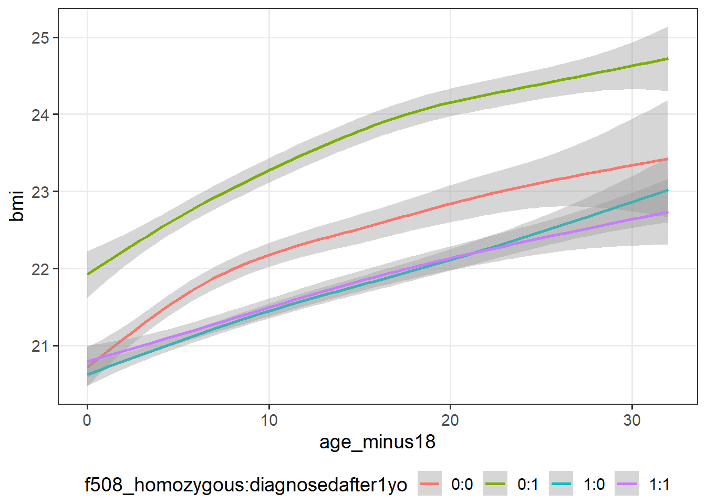
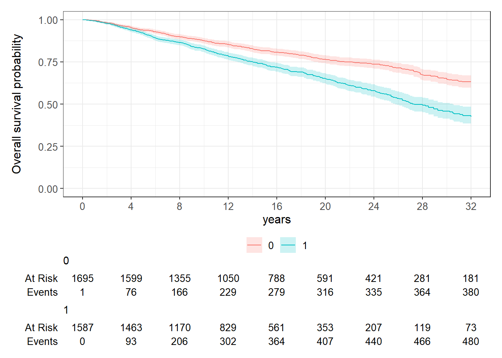

library(pacman)
p_load(rstan, brms)
p_load(ggplot2, ggpubr, ggridges, ggsurvfit, dplyr, tidyr, pipeR, magrittr, gridExtra)
p_load(stringr, survival, lubridate, DiagrammeR)
rstan_options(auto_write = TRUE)
options(mc.cores = parallel::detectCores())
# library(devtools) install_github('marcopalma3/rstanjmwiv')
library(rstanjmwiv)This is the code for the analysis of the UK Cystic Fibrosis Registry data in the paper “A Bayesian location-scale joint model for time-to-event and multivariate longitudinal data with association based on within-individual variability” by Palma et al. (2025).
Introduction
R packages
theme_set(theme_bw(base_size = 14) + theme(panel.grid.minor = element_blank(), plot.margin = margin(t = 6,
r = 6, b = 6, l = 6, unit = "pt"), legend.position = "bottom", legend.margin = margin(0,
0, 0, 0, unit = "pt"), legend.box.margin = margin(0, 0, 0, 0, unit = "pt")))
"%ni%" <- Negate("%in%")
options(digits = 3)
var_long <- c("gli_fev", "bmi")
var_long_labels <- c("FEV1", "BMI")Dataset
Import the dataset and store it in the cfdata object.
cfdata_clean <- cfdata %>%
mutate(s01encounterdate = lubridate::dmy(s01encounterdate), dmg_dateofdeath = lubridate::dmy(dmg_dateofdeath),
dmg_dateofbirth = lubridate::dmy(dmg_dateofbirth)) %>%
mutate_at(c("patient_id", "sitecode_anon", "dmg_sex", "dmg_ethnicity_gli", "s01isthisanannualreviewencounter",
"s05culturespeciesstaph", "s05culturespeciespseudoaeruginos", "s07pancreaticenzymesupplements"),
list(~factor(.)))
rm(cfdata)The number of rows is 166117 and the number of variables is 1357. The number of unique patient ID is 13899.
Subset used for the analysis - inclusion criteria
We have kept only the first visit per year per each patient. To account for all transplants, you need to first compute transplanted indicators, then remove missing values (often, in the year of transplant gli_fev is missing).
- filter longitudinal observations between the age of 18 and 50;
- keep only the first observation in each year (in case they have more than one annual reviews);
- compute transplant number (how many transplants they have had while in the dataset) and keep only the longitudinal observations before the first transplant
explanatory_before <- c("patient_id", "age", "dmg_sex", "dmg_dateofbirth", "f508_class", "dmg_ageatdiagnosis")
dependent <- var_long
cf2 <- cfdata_clean %>>%
(~ c(nrow(.), length(unique(.$patient_id))) -> a1) %>>%
filter(age >= 18 & age <= 50) %>>%
(~ c(nrow(.), length(unique(.$patient_id))) -> a2) %>>%
group_by(patient_id) %>% filter(year != lag(year) | row_number() == 1) %>>%
(~ c(nrow(.), length(unique(.$patient_id))) -> a3) %>>%
group_by(patient_id) %>%
mutate(Transplanted = cumsum(s10transplantsincelastannualrevi == "Y"),
EverTx = as.integer(max(Transplanted)>0) #, Age_PreviousEncounter = lag(age)
) %>%
filter(Transplanted == 0) %>%
mutate(#Age_LastEncBeforeTx = max(Age_PreviousEncounter),
Age_LastEncounter = max(age),
Date_LastEncounter = max(s01encounterdate)) %>>%
(~ c(nrow(.), length(unique(.$patient_id))) -> a4)
cf2_bypatient <- cf2 %>%
select(patient_id, dmg_dateofbirth, dmg_sex, dmg_ageatdiagnosis, f508_class) %>%
distinct(across(everything())) %>%
drop_na() %>% ##add_count(patient_id, name = "no_records")
mutate("diagnosedafter1yo" = factor(ifelse(dmg_ageatdiagnosis>1, 1, 0)),
"f508_homozygous" = factor(ifelse(f508_class == "Homoz", 1, 0)),
"yob" = year(dmg_dateofbirth))
cf2 <- left_join(cf2,
select(cf2_bypatient,
patient_id, diagnosedafter1yo, f508_homozygous, yob),
by = "patient_id")
# cf2 %>%
# finalfit::missing_pattern(dependent, explanatory_before, rotate.names = TRUE)
explanatory_after <- c("patient_id", "age", "dmg_sex", "diagnosedafter1yo", "f508_homozygous", "yob")
# cf2 %>%
# finalfit::missing_pattern(dependent, explanatory_after, rotate.names = TRUE)
cfLONG <- cf2 %>%
filter(!!sym(var_long[1]) > 0) %>%
filter(!!sym(var_long[2]) > 0 & !!sym(var_long[2]) < 80) %>%
drop_na(all_of(explanatory_after)) %>>%
(~ c(nrow(.), length(unique(.$patient_id))) -> a5)
cfLONG$patient_id <- droplevels(cfLONG$patient_id)
cfLONG <- ungroup(cfLONG)Please note, for some people the date of death is recorded, but not the age at death.
Event time is equal to: * death date - if the person died and never received transplant; * last encounter before (first) transplant - if the person received a transplant * last date recorded on the dataset - if the person was not dead and never received transplant by the last date recorded in the dataset.
Death status is equal to: * 1 - if the person died and never received transplant * 0 - otherwise (censored)
last_deathdate_recorded <- max(cf2$dmg_dateofdeath, na.rm = TRUE) ##please note that last recorded survdata$dmg_dateofdeath is "2022-01-15"
cfSURV <- cf2 %>%
group_by(patient_id) %>%
filter(row_number()==1) %>%
select(patient_id, dmg_sex, dmg_dateofbirth, dmg_dateofdeath, dmg_ageatdeath, diagnosedafter1yo, f508_homozygous, yob, EverTx, Date_LastEncounter) %>%
mutate(event_time = case_when(
!is.na(dmg_dateofdeath) && EverTx == 0 ~ dmg_dateofdeath, ###dead with no transplant
EverTx == 1 ~ Date_LastEncounter, ###people with a transplant
.default = last_deathdate_recorded ###alive people with no transplant
),
death_status = ifelse(!is.na(dmg_dateofdeath) && EverTx == 0, 1, 0),
ageatevent = max(18, as.numeric(interval(dmg_dateofbirth, event_time), "years"))) %>%
filter(patient_id %in% unique(cfLONG$patient_id)) %>%
ungroup()CF Female dataset - Administrative censoring at 50
- Introduce censoring at 50 years old if they had not experienced the event by then.
- Introduce censoring at age at last annual review before transplant.
female_subsample <- cfLONG %>%
filter(dmg_sex == "F") %>%
pull(patient_id) %>%
unique()
cfLONG_female <- cfLONG %>%
filter(patient_id %in% female_subsample) %>%
mutate(patient_id = droplevels(patient_id),
id = as.integer(patient_id),
age_minus18 = age - 18,
bmi10 = bmi/10) %>%
ungroup()
cfLONG_female %>%
group_by(patient_id) %>%
summarise(no_encounters = n()) %>%
ggplot(data = ., aes(x = no_encounters)) +
geom_bar(width = 0.5) +
labs(x = "Annual encounters", y = "Number of individuals")
cfLONG_female %>%
group_by(patient_id) %>%
summarise(no_encounters = n()) %>%
pull(no_encounters) %>%
quantile(., c(0.25, 0.5, 0.75))25% 50% 75%
5 8 12 cfLONG_female %>% ggplot(data = .,
aes(x = age_minus18,
y = !!sym(var_long[1]))) +
geom_smooth(aes(col=f508_homozygous:diagnosedafter1yo))
cfLONG_female %>% ggplot(data = .,
aes(x = age_minus18,
y = !!sym(var_long[2]))) +
geom_smooth(aes(col=f508_homozygous:diagnosedafter1yo))
cfSURV_female <- cfSURV %>%
filter(patient_id %in% female_subsample) %>%
mutate(patient_id = droplevels(patient_id),
id = as.integer(patient_id),
yob80 = yob - 1980,
AC50_ageatevent_minus18 = ifelse(ageatevent > 50, 50 - 18, ageatevent - 18),
AC50_ageatevent_minus18 = ifelse(AC50_ageatevent_minus18 > 0, AC50_ageatevent_minus18, 0),
AC50_death_status = ifelse(ageatevent > 50 & death_status == 1,
0, ###if they died after 50, censor them
death_status)
) %>%
ungroup()
cfSURV_female %>%
survfit2(Surv(AC50_ageatevent_minus18, AC50_death_status) ~
diagnosedafter1yo, data = .) %>%
ggsurvfit::ggsurvfit() +
add_confidence_interval() +
add_risktable() +
ylim(c(0,1)) +
scale_x_continuous(breaks = seq(0,32,4)) +
labs(x = "years", y = "Overall survival probability")
cfSURV_female %>%
survfit2(Surv(AC50_ageatevent_minus18, AC50_death_status) ~
f508_homozygous, data = .) %>%
ggsurvfit::ggsurvfit() +
add_confidence_interval() +
add_risktable() +
ylim(c(0,1)) +
scale_x_continuous(breaks = seq(0,32,4)) +
labs(x = "years", y = "Overall survival probability")

JM-WIV for females (CV association) - Fit model
f_fev <- list(formula(gli_fev ~ age_minus18 +
diagnosedafter1yo + f508_homozygous + (1 | id)),
formula(sigma ~ age_minus18 +
diagnosedafter1yo + f508_homozygous + (1 | id)))
f_bmi <- list(formula(bmi ~ age_minus18 +
diagnosedafter1yo + f508_homozygous + (1 | id)),
formula(sigma ~ age_minus18 +
diagnosedafter1yo + f508_homozygous + (1 | id)))
f_Event <- survival::Surv(AC50_ageatevent_minus18, AC50_death_status) ~ diagnosedafter1yo + f508_homozygous
prior_input <- list(
# y1mu_prior_mean = NULL,
# y2mu_prior_mean = NULL,
# y1sigma_prior_mean= NULL,
# y2sigma_prior_mean= NULL,
# e_prior_mean = NULL,
# a_prior_mean = rep(0, 4),
# ymu_prior_mean_for_intercept = NULL,
# ysigma_prior_mean_for_intercept = NULL,
# e_prior_mean_for_aux = NULL,
# y1mu_prior_scale = 5,
# y2mu_prior_scale = 5,
# y1sigma_prior_scale = 5,
# y2sigma_prior_scale = 5,
# e_prior_scale = 5,
# a_prior_scale = rep(2.5, 4),
# ymu_prior_scale_for_intercept = rep(0.5, 2),
# ysigma_prior_scale_for_intercept = rep(0.5, 2),
e_prior_scale_for_aux = rep(5, 6), #rev(cumsum(1:6))/2,
b_prior_scale = rep(1, 4),
b_prior_df = rep(1, 4),
b_prior_regularization = 5
)
standata_jmwiv_CFfemale <- make_standata_jmwiv(formulaLong1 = f_fev,
formulaLong2 = f_bmi,
dataLong = cfLONG_female,
id_var = "id",
time_varLong = "age_minus18",
formulaEvent = f_Event,
dataEvent = cfSURV_female,
a_K = 4,
assoc = "CV",
basehaz = "bs",
basehaz_aux = list(df = 6,
knots = NULL,
degree = 3),
qnodes = 15L,
prior_list = prior_input)stanc_mod <- stanc(here::here("STAN_functions/jm-wiv.stan"))
mod <- stan_model(stanc_ret = stanc_mod, model_name = "jmwiv_simple", verbose = FALSE)
CFfemale_jmwiv_CVassoc <- sampling(object = mod, data = standata_jmwiv_CFfemale,
cores = 2, chains = 2, warmup = 1000, iter = 2000, refresh = 0.2, seed = 856,
control = list(max_treedepth = 15))Alternatively, the last two chunks can be run using `rstanjmwiv::jmwiv_stan()`` - but this will not save the standata object.
CFfemale_jmwiv_CVassoc <- jmwiv_stan(formulaLong1 = f_fev, formulaLong2 = f_bmi,
dataLong = cfLONG_female, id_var = "id", time_varLong = "age_minus18", formulaEvent = f_Event,
dataEvent = cfSURV_female, a_K = 4, assoc = "CV", basehaz = "bs", basehaz_aux = list(df = 6,
knots = NULL, degree = 3), qnodes = 15L, prior_list = prior_input, cores = 2,
chains = 2, warmup = 1000, iter = 2000, seed = 856, init_r = 1, control = list(max_treedepth = 15))JM-WIV for females (CV association) - Results
print(get_elapsed_time(CFfemale_jmwiv_CVassoc)) warmup sample
chain:1 69461 4468
chain:2 24775 4430print(CFfemale_jmwiv_CVassoc, pars = c("y1mu_Intercept", "y1sigma_Intercept", "y2mu_Intercept",
"y2sigma_Intercept", "y1mu_beta", "y1sigma_beta", "y2mu_beta", "y2sigma_beta"),
probs = c(0.025, 0.975))Inference for Stan model: jm-wiv.
2 chains, each with iter=2000; warmup=1000; thin=1;
post-warmup draws per chain=1000, total post-warmup draws=2000.
mean se_mean sd 2.5% 97.5% n_eff Rhat
y1mu_Intercept 2.17 0.00 0.03 2.12 2.22 51 1.02
y1sigma_Intercept -1.33 0.00 0.02 -1.37 -1.29 1025 1.00
y2mu_Intercept 21.18 0.01 0.10 20.98 21.39 76 1.01
y2sigma_Intercept 0.24 0.00 0.02 0.20 0.28 611 1.00
y1mu_beta[1] -0.04 0.00 0.00 -0.04 -0.04 916 1.00
y1mu_beta[2] 0.33 0.00 0.03 0.27 0.38 49 1.00
y1mu_beta[3] -0.25 0.00 0.03 -0.30 -0.20 53 1.03
y1sigma_beta[1] -0.02 0.00 0.00 -0.02 -0.02 1656 1.00
y1sigma_beta[2] 0.00 0.00 0.02 -0.04 0.04 792 1.00
y1sigma_beta[3] 0.04 0.00 0.02 0.00 0.08 849 1.00
y2mu_beta[1] 0.04 0.00 0.00 0.04 0.05 1599 1.00
y2mu_beta[2] 0.90 0.02 0.12 0.67 1.14 62 1.03
y2mu_beta[3] -0.97 0.01 0.11 -1.20 -0.76 65 1.00
y2sigma_beta[1] 0.00 0.00 0.00 0.00 0.00 1759 1.00
y2sigma_beta[2] 0.01 0.00 0.02 -0.03 0.05 372 1.00
y2sigma_beta[3] -0.08 0.00 0.02 -0.12 -0.04 375 1.01
Samples were drawn using NUTS(diag_e) at Mon Mar 3 07:59:00 2025.
For each parameter, n_eff is a crude measure of effective sample size,
and Rhat is the potential scale reduction factor on split chains (at
convergence, Rhat=1).print(CFfemale_jmwiv_CVassoc, pars = "a_beta", probs = c(0.025, 0.975))Inference for Stan model: jm-wiv.
2 chains, each with iter=2000; warmup=1000; thin=1;
post-warmup draws per chain=1000, total post-warmup draws=2000.
mean se_mean sd 2.5% 97.5% n_eff Rhat
a_beta[1] -2.67 0.00 0.11 -2.90 -2.45 1188 1.00
a_beta[2] 3.18 0.01 0.43 2.37 4.05 928 1.00
a_beta[3] -0.09 0.00 0.02 -0.13 -0.04 637 1.01
a_beta[4] 0.18 0.00 0.10 -0.01 0.36 748 1.01
Samples were drawn using NUTS(diag_e) at Mon Mar 3 07:59:00 2025.
For each parameter, n_eff is a crude measure of effective sample size,
and Rhat is the potential scale reduction factor on split chains (at
convergence, Rhat=1).print(CFfemale_jmwiv_CVassoc, pars = c("e_Intercept", "e_beta"), probs = c(0.025,
0.975))Inference for Stan model: jm-wiv.
2 chains, each with iter=2000; warmup=1000; thin=1;
post-warmup draws per chain=1000, total post-warmup draws=2000.
mean se_mean sd 2.5% 97.5% n_eff Rhat
e_Intercept 0.12 0 0.06 0.02 0.23 4224 1
e_beta[1] -0.34 0 0.08 -0.49 -0.19 3939 1
e_beta[2] 0.06 0 0.07 -0.09 0.20 3318 1
Samples were drawn using NUTS(diag_e) at Mon Mar 3 07:59:00 2025.
For each parameter, n_eff is a crude measure of effective sample size,
and Rhat is the potential scale reduction factor on split chains (at
convergence, Rhat=1).print(CFfemale_jmwiv_CVassoc, pars = "b_sd", probs = c(0.025, 0.975))Inference for Stan model: jm-wiv.
2 chains, each with iter=2000; warmup=1000; thin=1;
post-warmup draws per chain=1000, total post-warmup draws=2000.
mean se_mean sd 2.5% 97.5% n_eff Rhat
b_sd[1] 0.79 0 0.01 0.77 0.81 84 1.04
b_sd[2] 0.44 0 0.01 0.42 0.45 709 1.01
b_sd[3] 3.32 0 0.05 3.23 3.41 180 1.00
b_sd[4] 0.46 0 0.01 0.44 0.47 955 1.00
Samples were drawn using NUTS(diag_e) at Mon Mar 3 07:59:00 2025.
For each parameter, n_eff is a crude measure of effective sample size,
and Rhat is the potential scale reduction factor on split chains (at
convergence, Rhat=1).summary(CFfemale_jmwiv_CVassoc)$summary[c("a_beta[1]", "a_beta[2]", "a_beta[3]",
"a_beta[4]"), c(1, 4, 8)] %>%
multiply_by(c(1/10, 1/10, 1, 1)) %>%
exp() mean 2.5% 97.5%
a_beta[1] 0.765 0.748 0.782
a_beta[2] 1.374 1.268 1.499
a_beta[3] 0.915 0.875 0.958
a_beta[4] 1.196 0.987 1.439ranef_corr_jmwiv(CFfemale_jmwiv_CVassoc) [,1] [,2] [,3] [,4]
[1,] 1.00000 0.14736 0.47489 0.00494
[2,] 0.14736 1.00000 0.00198 0.23171
[3,] 0.47489 0.00198 1.00000 0.49378
[4,] 0.00494 0.23171 0.49378 1.00000The posterior predictive checks for the longitudinal submodel are useful to assess the general fit.
list_of_draws <- rstan::extract(CFfemale_jmwiv_CVassoc)
ppdata <- replicate(10, ppcheck(list_of_draws = list_of_draws, data = cfLONG_female,
x = "age_minus18", idvar = "id"), simplify = FALSE)
library(bayesplot)
y1_rep <- sapply(ppdata, "[[", 1) %>%
t() ###extract y1 from all replicates
y2_rep <- sapply(ppdata, "[[", 2) %>%
t() ###extract y2 from all replicates
ppc_dens_overlay(cfLONG_female$gli_fev, y1_rep)
ppc_dens_overlay(cfLONG_female$bmi, y2_rep)The baseline hazard is plotted here.
max_time <- cfSURV_female$AC50_ageatevent_minus18 %>% max
bs_basis <- splines::bs(seq(0, max_time, by = 0.1),
df = standata_jmwiv_CFfemale$basehaz_df,
knots = NULL,
degree = 3,
Boundary.knots = c(0, max_time),
intercept = TRUE)
draws_basehaz <- tcrossprod(bs_basis, list_of_draws$e_aux) %>% # e_aux are coefficients for LOG baseline hazard
add(summary(CFfemale_jmwiv_CVassoc)$summary["e_Intercept", "mean"]) %>%
exp(.) %>% ###baseline hazard
apply(., 1, function(x) c(mean(x),quantile(x, probs = c(0.025,0.975)))) %>%
t()
colnames(draws_basehaz) <- c("Estimate", "Q2.5", "Q97.5")
data.frame("Time" = seq(0, max_time, by = 0.1),
draws_basehaz) %>%
ggplot(.,
aes(x = Time, y = Estimate)) +
geom_line() +
xlim(c(0, NA)) +
ylim(c(0, NA)) +
geom_ribbon(aes(ymin=Q2.5, ymax=Q97.5), alpha = 0.2, fill = "red") +
labs(y = "Baseline hazard", title = "Joint model with CV association")The function below returns the predictions for two randomly selected women.
pred_plot_jmwiv(stanfit = CFfemale_jmwiv_CVassoc, standata = standata_jmwiv_CFfemale,
var_labels = c(var_long_labels, "Survival probability"), id_selected = c(811,
938), plot_jm = FALSE) + labs(x = "Age") + scale_x_continuous(breaks = seq(0,
32, by = 5), labels = 18 + seq(0, 32, by = 5)) + theme(strip.text.x = element_blank())Session info
sessionInfo()R version 4.3.3 (2024-02-29 ucrt)
Platform: x86_64-w64-mingw32/x64 (64-bit)
Running under: Windows Server 2022 x64 (build 20348)
Matrix products: default
locale:
[1] LC_COLLATE=English_United Kingdom.utf8
[2] LC_CTYPE=English_United Kingdom.utf8
[3] LC_MONETARY=English_United Kingdom.utf8
[4] LC_NUMERIC=C
[5] LC_TIME=English_United Kingdom.utf8
time zone: Europe/London
tzcode source: internal
attached base packages:
[1] stats graphics grDevices utils datasets methods base
other attached packages:
[1] bayesplot_1.11.1 rstanjmwiv_1.0.0.0000 DiagrammeR_1.0.11
[4] lubridate_1.9.3 survival_3.5-8 stringr_1.5.1
[7] gridExtra_2.3 magrittr_2.0.3 pipeR_0.6.1.3
[10] tidyr_1.3.1 dplyr_1.1.4 ggsurvfit_1.0.0
[13] ggridges_0.5.6 ggpubr_0.6.0 ggplot2_3.5.0
[16] brms_2.20.4 Rcpp_1.0.12 rstan_2.32.5
[19] StanHeaders_2.32.5 pacman_0.5.1
loaded via a namespace (and not attached):
[1] formatR_1.14 inline_0.3.21 sandwich_3.1-0
[4] rlang_1.1.5 multcomp_1.4-25 matrixStats_1.5.0
[7] compiler_4.3.3 mgcv_1.9-1 loo_2.8.0
[10] vctrs_0.6.5 reshape2_1.4.4 pkgconfig_2.0.3
[13] fastmap_1.1.1 backports_1.5.0 ellipsis_0.3.2
[16] labeling_0.4.3 threejs_0.3.3 promises_1.2.1
[19] rmarkdown_2.25 markdown_1.12 nloptr_2.0.3
[22] purrr_1.0.2 xfun_0.42 jsonlite_1.8.8
[25] later_1.3.2 broom_1.0.5 parallel_4.3.3
[28] R6_2.6.1 dygraphs_1.1.1.6 RColorBrewer_1.1-3
[31] stringi_1.8.3 mvQuad_1.0-8 boot_1.3-30
[34] car_3.1-2 estimability_1.5 knitr_1.45
[37] zoo_1.8-12 base64enc_0.1-3 timechange_0.3.0
[40] httpuv_1.6.14 Matrix_1.6-5 splines_4.3.3
[43] igraph_2.0.2 tidyselect_1.2.1 rstudioapi_0.15.0
[46] abind_1.4-8 yaml_2.3.8 codetools_0.2-19
[49] miniUI_0.1.1.1 curl_5.2.0 pkgbuild_1.4.6
[52] lattice_0.22-5 tibble_3.2.1 plyr_1.8.9
[55] shiny_1.8.0 withr_3.0.2 bridgesampling_1.1-2
[58] posterior_1.6.1 coda_0.19-4.1 evaluate_0.23
[61] RcppParallel_5.1.10 xts_0.13.2 pillar_1.10.1
[64] carData_3.0-5 tensorA_0.36.2.1 checkmate_2.3.2
[67] DT_0.32 stats4_4.3.3 shinyjs_2.1.0
[70] distributional_0.5.0 generics_0.1.3 rstantools_2.4.0
[73] munsell_0.5.1 scales_1.3.0 minqa_1.2.6
[76] gtools_3.9.5 xtable_1.8-4 glue_1.8.0
[79] emmeans_1.10.0 tools_4.3.3 shinystan_2.6.0
[82] data.table_1.15.2 SparseM_1.81 lme4_1.1-35.1
[85] colourpicker_1.3.0 ggsignif_0.6.4 visNetwork_2.1.2
[88] mvtnorm_1.2-4 grid_4.3.3 QuickJSR_1.6.0
[91] crosstalk_1.2.1 colorspace_2.1-1 patchwork_1.2.0
[94] nlme_3.1-164 cli_3.6.4 Brobdingnag_1.2-9
[97] V8_4.4.2 gtable_0.3.6 rstatix_0.7.2
[100] digest_0.6.34 TH.data_1.1-2 farver_2.1.2
[103] htmlwidgets_1.6.4 htmltools_0.5.7 lifecycle_1.0.4
[106] statmod_1.5.0 mime_0.12 shinythemes_1.2.0
[109] MASS_7.3-60.0.1